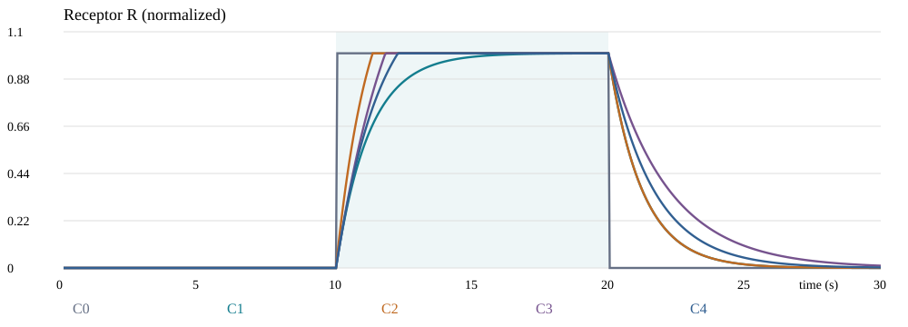

รายงาน Lab04 Artificial Hormone Mechanism
ชื่อ/รหัส: อิทธิพล แป้นอ้อย / 6752500053 | กลุ่ม: __________ | วันที่รันจริง: 09/11/2026 | code commit: c5b68bf
การทดลองและการตรวจโค้ด
เปรียบเทียบ C0 direct, C1 baseline(.8/.6/.2), C2 productionเพิ่ม(1.2/.6/.2), C3 clearanceลด(.8/.25/.2), C4ไม่มีbinding(.8/.6/0) โดยใช้ dt=.05 s, H0=0, duration30 s เหมือนกัน S=0ช่วง0–10 s, S=1ช่วง10–20 s แล้วปิด20–30 s; ทุกcondition601states/600updates Checkerผ่าน13/13
สมการและการตรวจสองรอบแรก
P=k_prod S; C=k_clear H_old; B=k_bind R_old
H_new=clamp(H_old+dt(P−C−B),0,1); R_new=receptor(H_new)
receptor(.2,.1,.5)=.25; C1จากH=0ให้H=.0400ที่10.05 s แล้ว .0784ที่10.10 s ตรงกับCSV input_timeคือเวลาต้นช่วง ส่วนtime_sคือสถานะหลังupdate ไม่ใช่physical latency
ผลจาก comparison/metrics.json
| C | peak H | AUC H·s | latency s | rise s | recovery s | clamp | phi TV |
|---|
| C0 | N/A | N/A | 0.050000 | 0.000000 | 0.050000 | N/A | 0.400000 |
| C1 | 0.999715 | 9.999644 | 0.150000 | 2.700000 | 2.850000 | 0.000000 | 0.399829 |
| C2 | 1.000000 | 10.672410 | 0.100000 | 1.050000 | 2.850000 | 0.290000 | 0.399943 |
| C3 | 1.000000 | 11.389145 | 0.150000 | 1.450000 | 5.100000 | 0.273333 | 0.397890 |
| C4 | 1.000000 | 10.754720 | 0.150000 | 1.700000 | 3.800000 | 0.258333 | 0.399548 |

สรุปผลและขอบเขตหลักฐาน
กลไกฮอร์โมนใช้ S กระตุ้น P=k_prod S ขณะที่ C=k_clear H_old และ B=k_bind R_old เป็นอัตรากำจัดที่คำนวณจากสถานะเก่าชุดเดียวกัน ก่อนอัปเดต H_new=clamp(H_old+dt(P−C−B),0,1) และอ่าน receptor ใหม่ R=H ภายใต้ bounds 0–1 จึงเก็บประวัติของสิ่งเร้าและค่อย ๆ กลับสู่ปกติ ต่างจาก C0 ซึ่ง R=S โดยตรง จากนั้น bounded mapping ส่ง phi=clamp(.20+.20R,.10,.45) rad และ stride=clamp(.055+.010R,.040,.070) m โดยไม่สั่งมอเตอร์ตรง อ้างอิง README/worksheet ของ Lab04 รายวิชา RAE67 Bio-Inspired Robotics ซึ่งอธิบายสมการต้นทาง Hc(t)=βHc(t−1)+Hg(t)−Hr(t), Hg(t)=αf(S(t)), Hr(t)=ΣγᵢReceptorᵢ(t) และอ้าง Homchanthanakul et al. (2019), DOI 10.1109/IROS40897.2019.8968580 แบบจำลองที่รันเป็น proposed course model แบบ Euler ไม่ใช่การทำซ้ำผลของบทความ และไม่แทน β ด้วย k_clear โดยตรง
ข้อมูลสนับสนุน prediction ที่บันทึกไว้ก่อนการรันชุดนี้: C2 เพิ่ม production ทำให้ latency ลดจาก C1 .15 เป็น .10 s และ rise ลดจาก 2.70 เป็น 1.05 s; C3 ลด clearance ทำให้ recovery เพิ่มจาก 2.85 เป็น 5.10 s (ช้ากว่า 2.25 s); C4 ตัด binding ทำให้ recovery เป็น 3.80 s (ช้ากว่า C1 .95 s) C2/C3 มี peak_H=1 เท่ากันเพราะ saturation แต่ AUC ต่างกัน 10.672410 กับ 11.389145 H·s และ upper-clamp fraction ต่างกัน .290000 กับ .273333 จึงต้องใช้หลาย metric ส่วน C0 ไม่มี H ทำให้ peak_H/AUC/clamp fraction เป็น N/A ไม่ใช่ศูนย์ ค่า latency/recovery .05 s ของ C0 เป็นผลของ post-update sampling ไม่ใช่ความหน่วงทางกายภาพ
ขอบเขตหลักฐานจำกัดที่ hormone subsystem แบบ deterministic; TV ต่ำกว่าไม่ได้พิสูจน์ gait ที่ดีขึ้น โดย phi TV ของ C3=.397890 rad ต่ำกว่า C1=.399829 rad เล็กน้อยส่วนหนึ่งเพราะ H ของ C3 ยังเหลือมากกว่าที่ปลาย trial ไม่ใช่หลักฐานว่าหุ่นยนต์เดินดีกว่า ผล zero คง H=0; spike มี S=1 หนึ่ง interval ที่ 10.00 s ให้ H=.04 ที่ 10.05 s; fault NaN ที่ input15.00 ทำให้ H=R=0 และ phi=.20/stride=.055 ที่ state15.05 ก่อนสะสมใหม่ H=.04 ที่15.10 s ขอบเขตซอฟต์แวร์และ fallback นี้ไม่ใช่ actuator limits, watchdog หรือ E-stop การทดลอง Lab05 ควรเชื่อม hormone–CPG เปรียบเทียบ fixed/direct/hormone/binding-ablation ใช้ schedule และ warmup เดียวกัน และแยก phi-only/stride-only เพื่อศึกษาสาเหตุ ก่อนขยายสู่ contact feedback และการทดลองฮาร์ดแวร์ที่สอบเทียบแล้ว
Handoff และการทำซ้ำ
ทดสอบcontractเดิมจากLab03จริงแล้ว: R=0ให้phi=.20 rad/stride=.055 m และR=1ให้phi=.40 rad/stride=.065 m; trace C1ตรงกับcontractLab04ทุกแถว รันซ้ำแบบdeterministicทั้ง5conditionsให้metricsตรงกัน ดูverification.txt